# Grabación de insectos de limonero con un microscopio digital.
# Instalación de "colonias" con movimiento en base a la investigacion de las hormigas / insectos en general.
Comunicados entre sí.
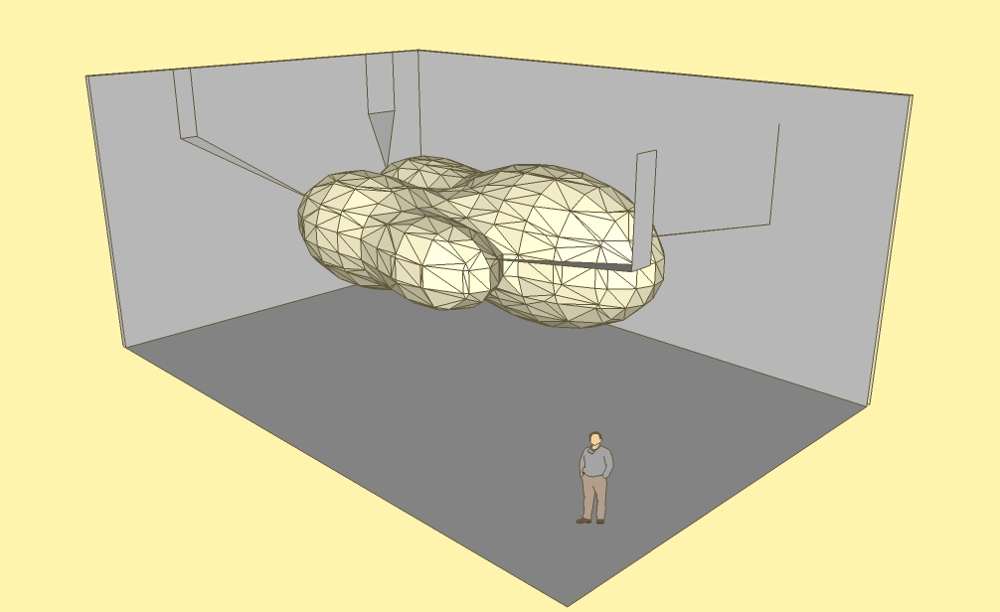
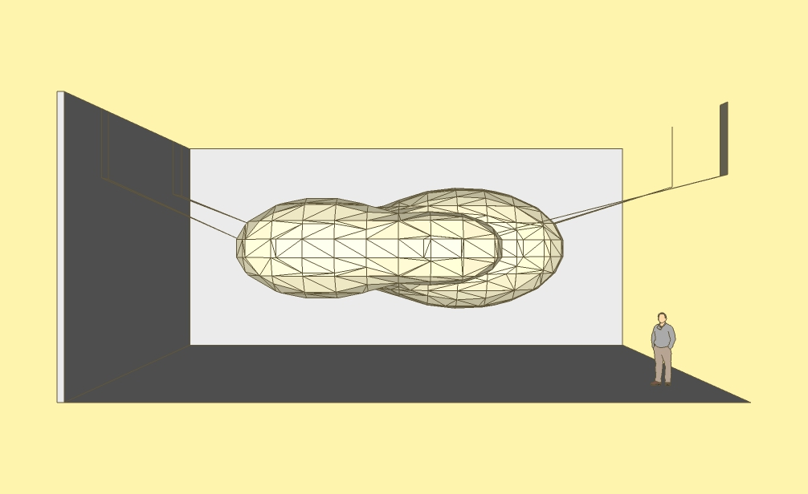
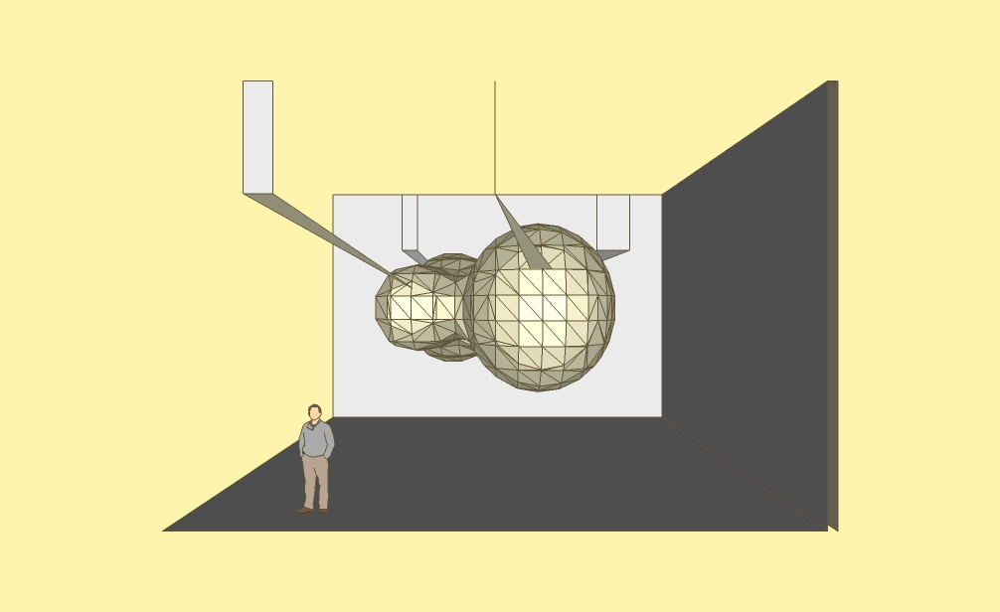
# Se abandona la idea de la gran instalación y se recurre a pequeños modulos, también conectados entre sí.
Que tenga relación con la obra anterior "input_animalia".
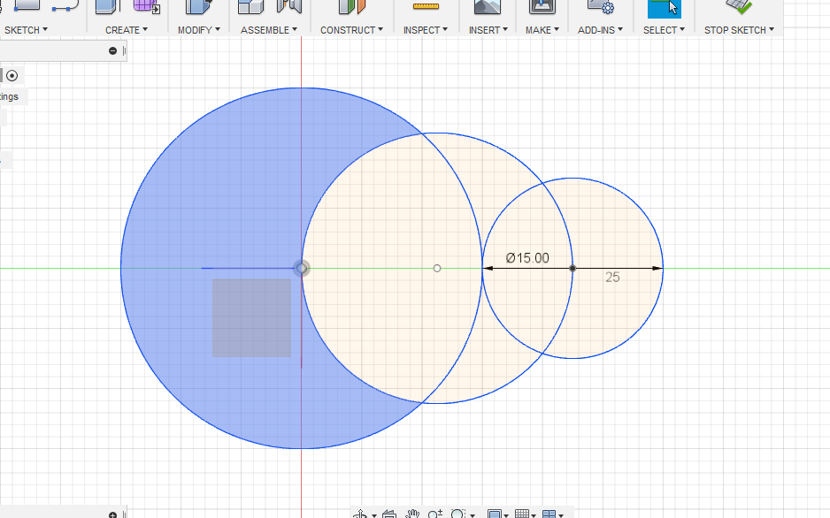
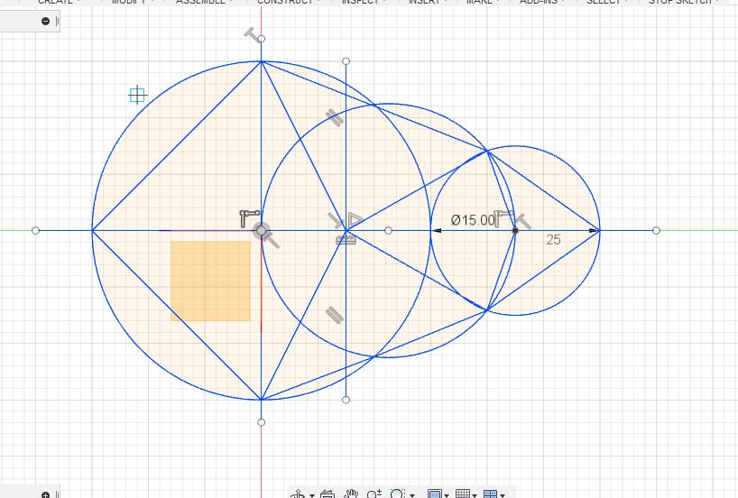
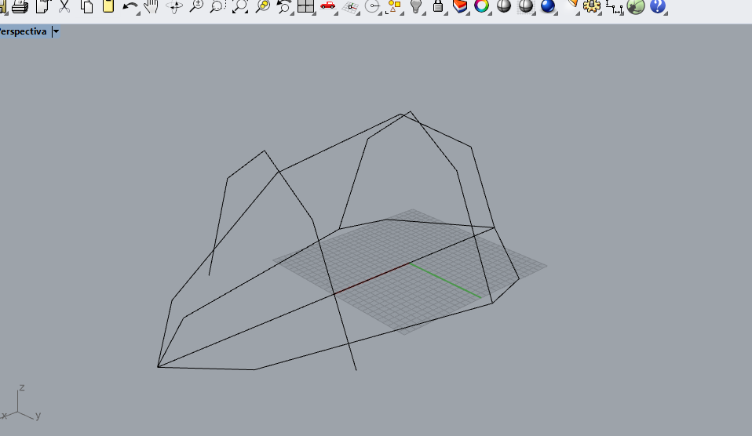
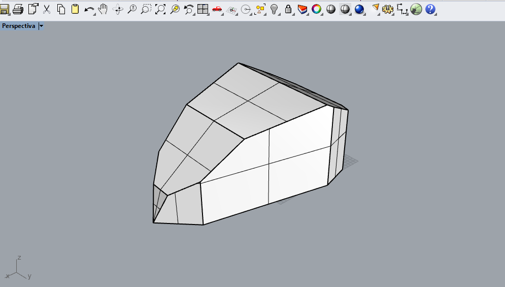
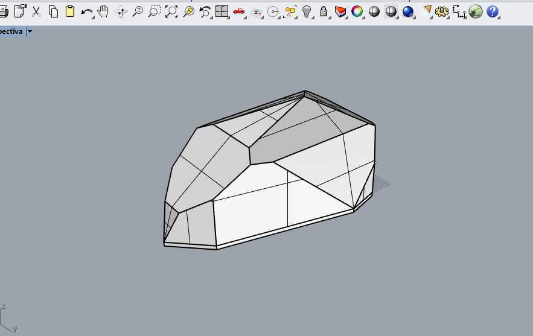
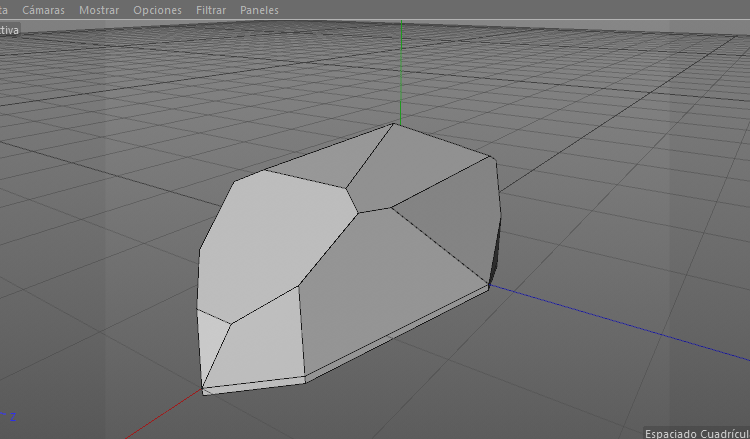
# Inteligencia artificial
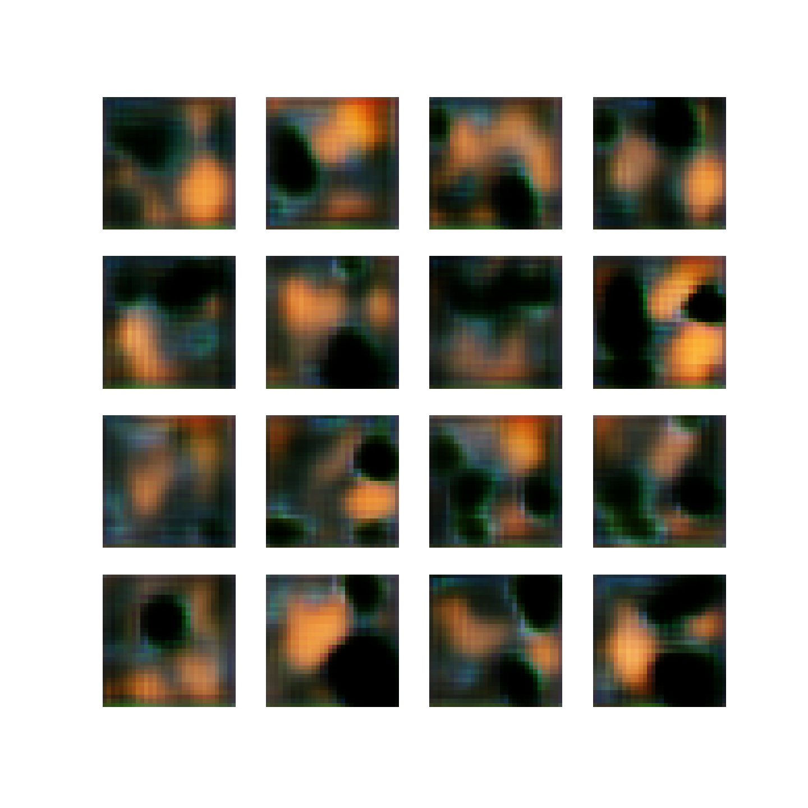
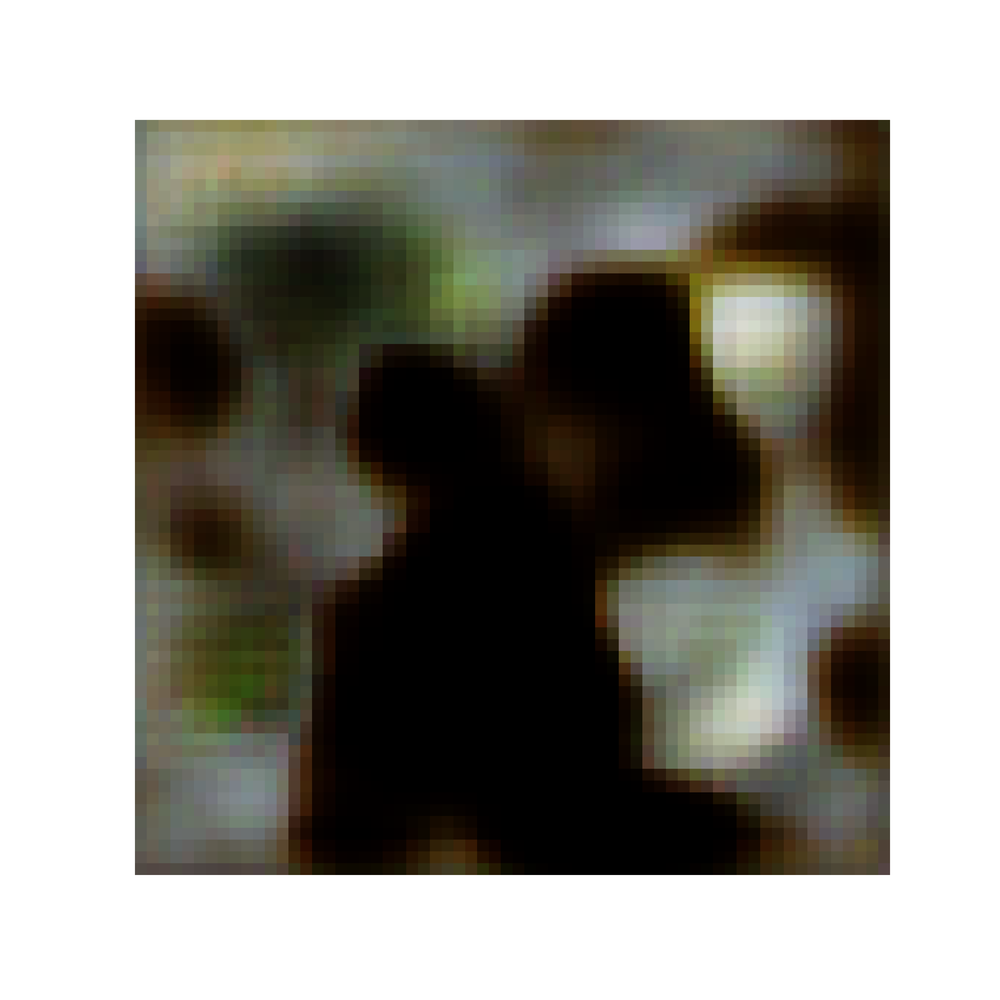
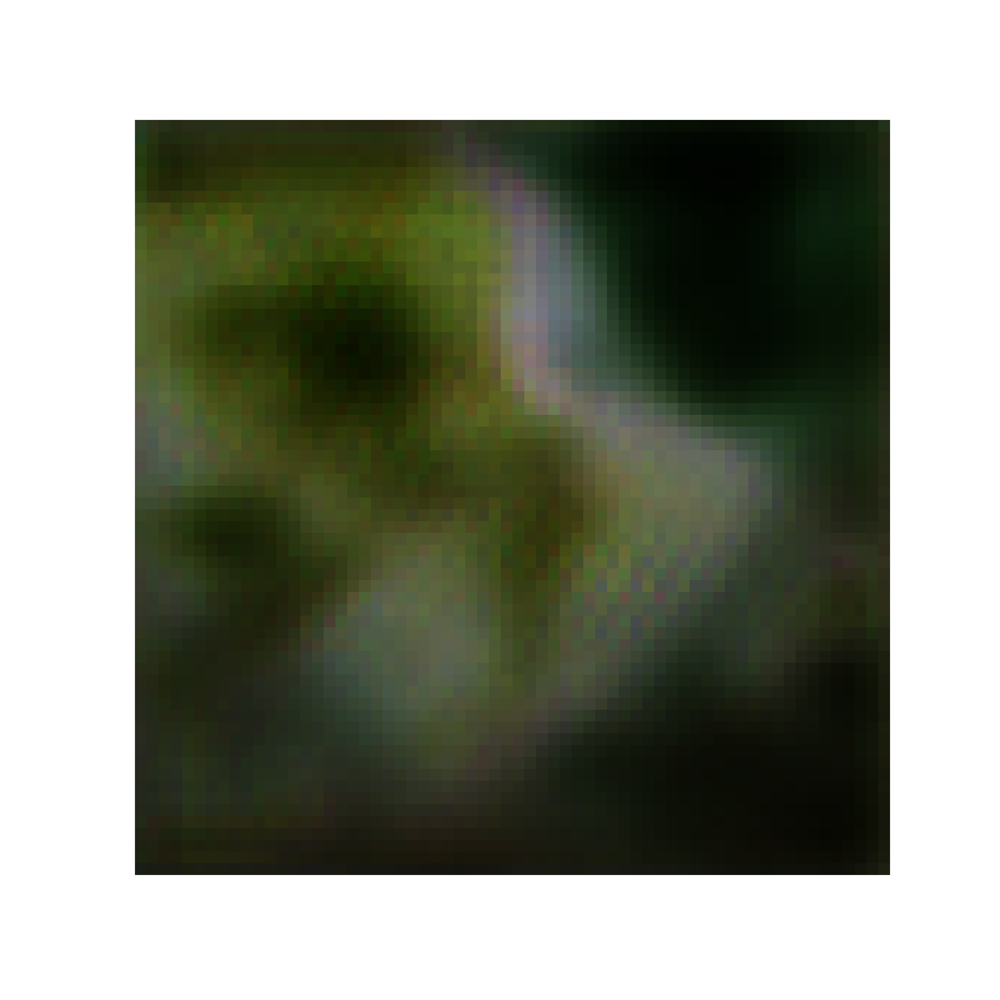
# Gif de lo que sucede en cada neurona durante el aprendizaje
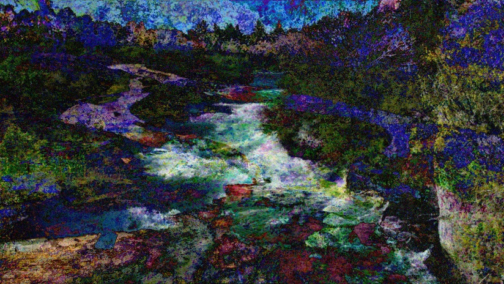
# Pienso una instalación pensando en capas con lo que me devuelve la IA.
-- Programado en Rhinoceros y Grasshopper, permite una programación en volumen.